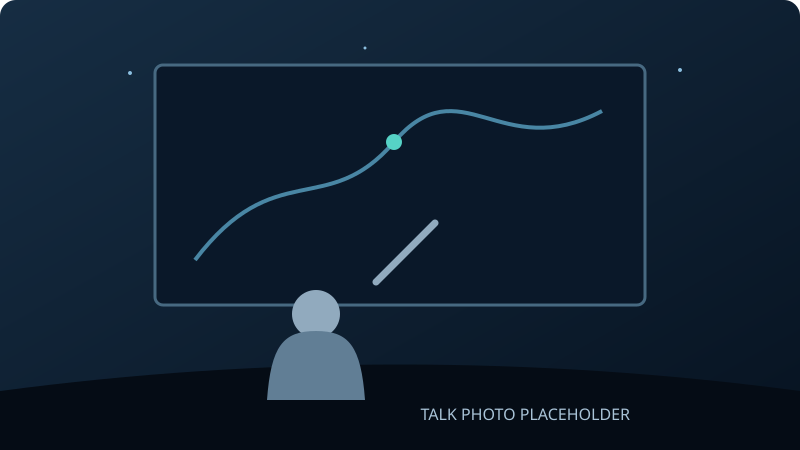
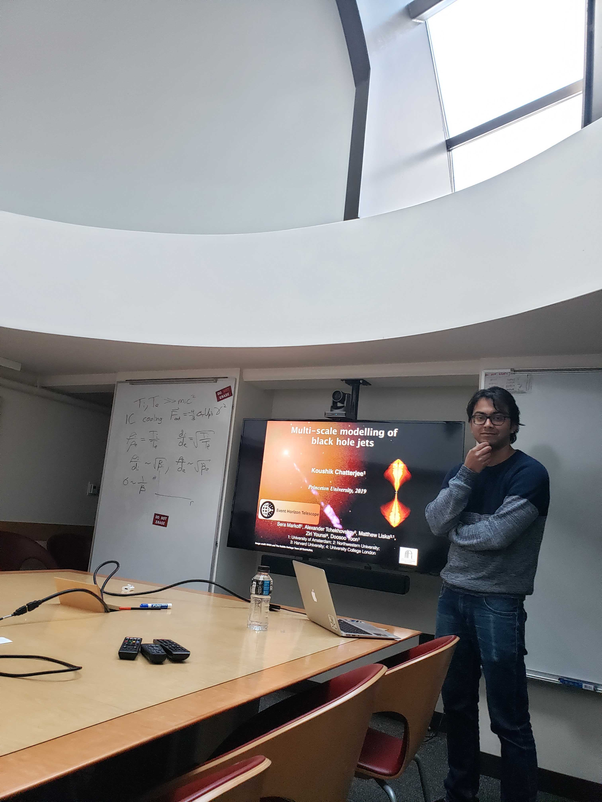

Simons Collaboration on Extreme Electrodynamics
Invited talk in New York City, USA, in 2026.
I’ve given 31 invited talks and seminars and 36 conference contributions, sharing work on black holes, neutron stars, and the simulations that bring their environments to life. My talks have taken me from Dolgoprudny, Russia, to meetings in India, Europe, and North America.
What I enjoy most is the conversation around a talk: a question from a different perspective, an idea over coffee, or a discussion that grows into a new collaboration. Conferences bring those exchanges together and make the science more rewarding.
Beyond research audiences, sharing astrophysics has ranged from an Event Horizon Telescope outreach discussion to a Space India webinar on black-hole imaging for school students. I’ll add links to public recordings here as they become available.


Invited talk in New York City, USA, in 2026.
Invited lectures at Caltech in Pasadena, USA, in 2025.
Invited talk in Granada, Spain, in 2022.
Contributed talk in Dolgoprudny, Russia, in 2017.